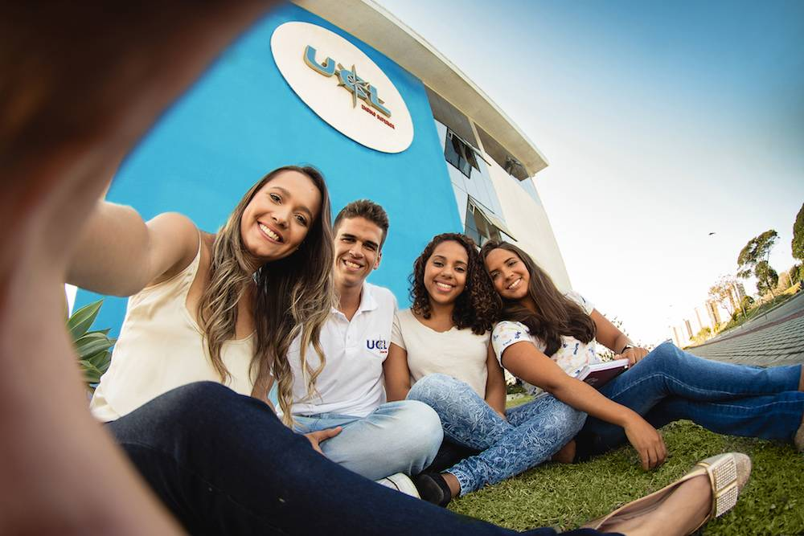
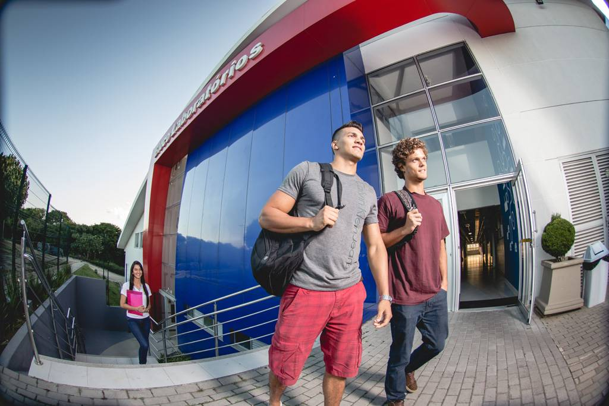
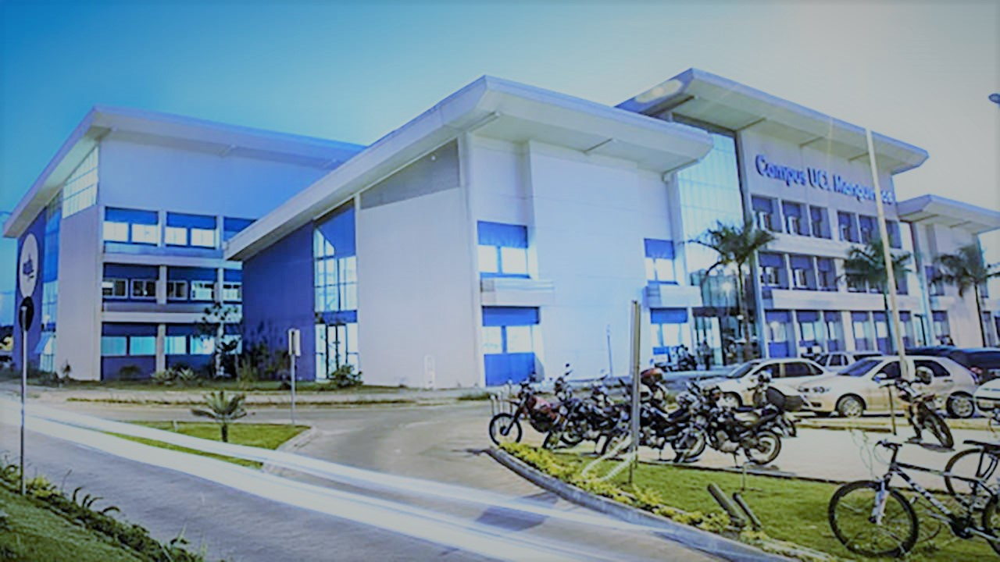

Histórico
A UCL – Faculdade do Centro Leste iniciou as suas atividades em janeiro de 2000, realizando o seu
primeiro
processo seletivo com três cursos na área de Engenharia. Esta área do conhecimento foi escolhida em
razão da
região definida para a sua implantação, no município de Serra, o centro industrial mais relevante do
Estado.
Seu nascimento ocorreu nas instalações do CEV – Centro Educacional Valparaíso. No ano seguinte, devido
seu
crescimento, a faculdade transferiu-se para Jardim Limoeiro, onde abriu novos cursos na área de
Engenharia,
e também os cursos de Sistemas de Informação e Design, todos já reconhecidos pelo MEC.
Recentemente, foram também autorizados pelo MEC os cursos superiores de Tecnólogo em Logística,
Tecnólogo em
Gestão da Qualidade, Tecnólogo em Marketing, Administração, Engenharia de Petróleo e Engenharia de
Produção.
Atualmente, a faculdade conta com treze cursos de graduação, sendo sete nas diversas engenharias, o de
sistemas de informação, o de design, o de administração e três cursos de Tecnólogo. Mais informações
disponíveis em Cursos de Graduação.

A UCL também, logo cedo, passou a atuar no ensino de pós-graduação “lato sensu”, com vários cursos de
especialização ofertados à comunidade, tanto nas áreas relacionadas às engenharias, como também os MBA
na
área de gestão. Atualmente tem um vasto leque de cursos ofertados à comunidade incluindo os curso de Pós
MBA. Mais informações em Cursos de Pós-Graduação.
Embora seja uma faculdade voltada para o ensino, a UCL já deu seus primeiros passos em pesquisa,
contando
com financiamentos da Petrobrás, da FAPES, do FINEP e da própria UCL. Utiliza atualmente um laboratório
de
Fenômenos de Transporte, com professores e bolsistas da UCL desenvolvendo projetos para a Petrobrás em
associação com grupos de pesquisas desta empresa; e um laboratório de Engenharia Civil, com professores
e
bolsistas desenvolvendo um projeto financiado pela FAPES.
Na extensão, alguns projetos em andamento envolvendo outras instituições locais (governo, empresas,
associações comunitárias), fortalecem a vinculação da UCL à comunidade em que está inserida.
Como a Faculdade se localiza numa região com alto índice de industrialização, cuja produção é voltada
principalmente para o mercado internacional (VALE, ArcellorMittal, FIBRIA, SAMARCO) e os distritos
industriais de CIVIT I e II sediam empresas importantes em diversas áreas de produção, sendo notável nos
últimos anos o crescimento também da área de mármore e granito, todas com elevado padrão de competição
no
mercado. Para atender aos requisitos exigidos por este ambiente, a faculdade oferece formação de
qualidade,
na graduação e na pós-graduação, em áreas de competência a ele diretamente relacionadas.
Como é comum no cenário brasileiro atual, a região apresenta questões sociais relevantes nas áreas de
educação, meio-ambiente, segurança e empregabilidade, e a UCL participa, em conjunto com o poder
público, as
empresas, as associações comunitárias e outras instituições, do esforço para resolvê-las.

Em 2008, a UCL inaugurou seu primeiro prédio em área própria, localizado na Rodovia ES-010, na região de
Manguinhos, em frente ao parque Yahoo, para onde transferiu parte de suas atividades. Neste ano de 2011,
entrega à comunidade a sua segunda unidade, no mesmo local e, com este novo prédio, o bloco didático I,
transfere toda a sua atividade para instalações próprias e projetadas para atender a todos com muito
mais
segurança, conforto e eficiência.
A UCL, portanto, na sua breve trajetória, demonstra com trabalho e dedicação cumprir a missão que se
atribuiu: contribuir com o desenvolvimento regional através da oferta de educação superior de qualidade,
proporcionando aos jovens uma formação que os habilite a gerar e/ou aproveitar as oportunidades de
trabalho
surgidas nesse contexto de alta exigência de qualificação, para que cresçam como profissionais e
cidadãos.